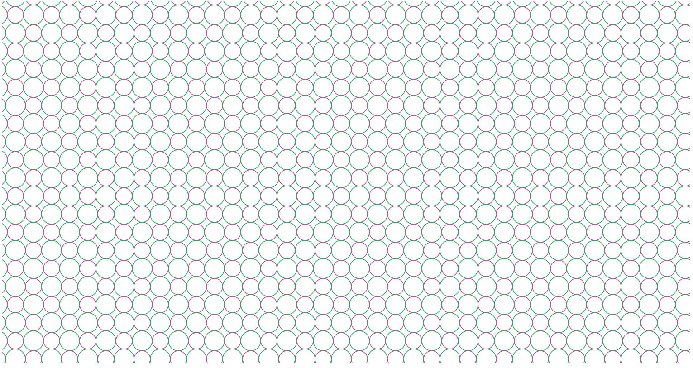
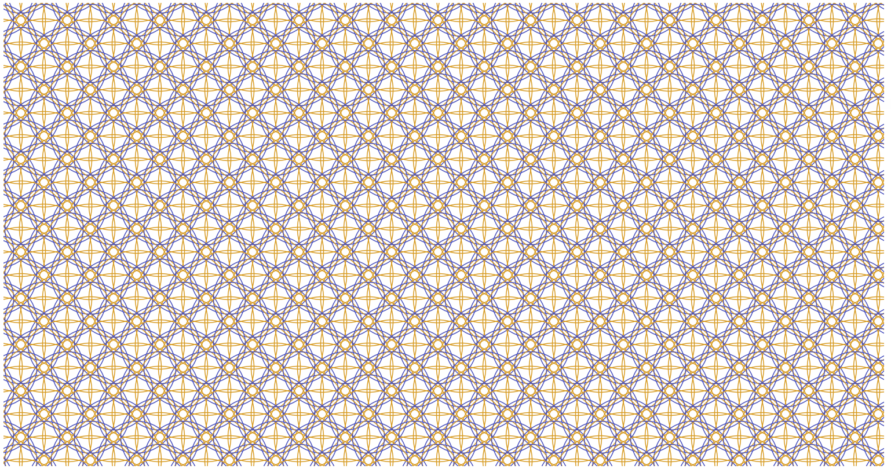
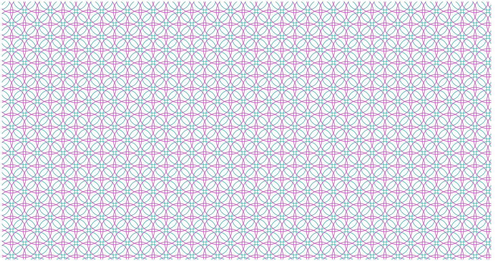
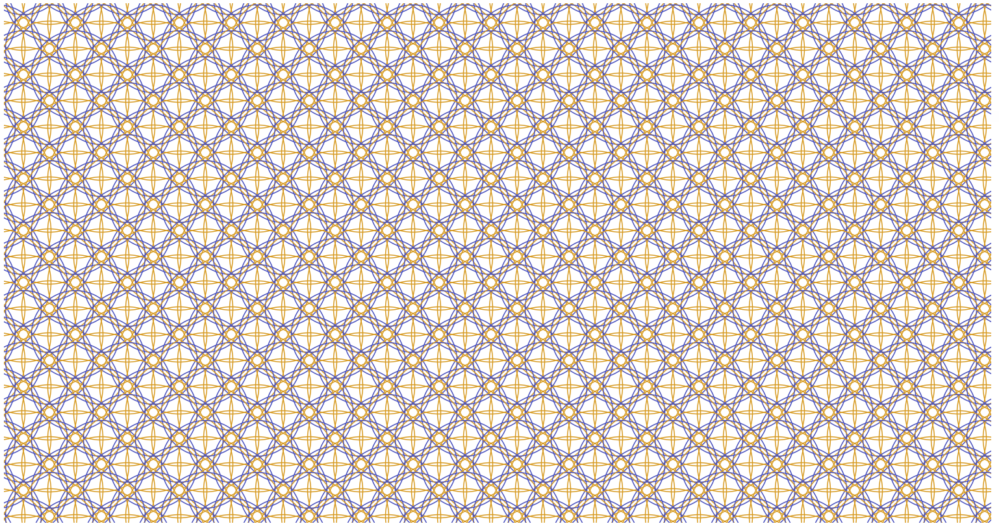
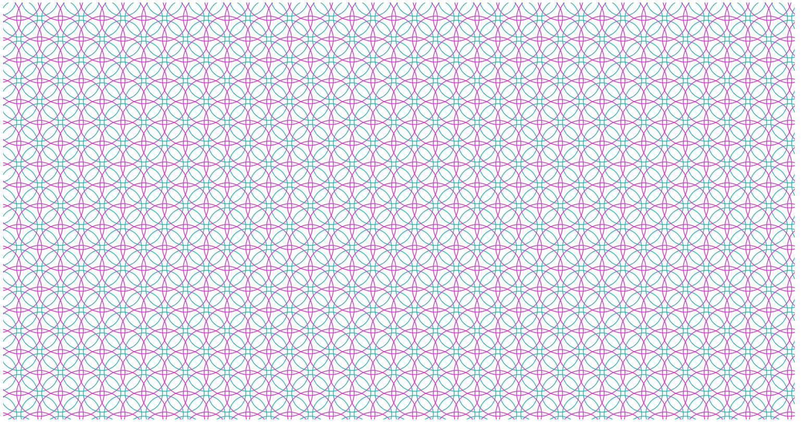

É possível criar padrões extremamente intrincados, a partir de construções simples.
(Versão interativa: https://asgunzi.neocities.org/ArteMatematica/FerramentaPadroesCirculos)
Seja uma malha formada de pontos.

Se o raio de cada ponto for aumentado, e com o raio vermelho levemente maior que o azul.

Começa a ficar interessante quando os raios aumentam a ponto de se tangenciar.

Aumentando mais ainda.

E assim sucessivamente:

Padrões diversos formados por diferentes raios:


Variando cores
 



Código fonte, para criar suas próprias variações.
https://github.com/asgunzi/Padr-es-em-C-rculos
Veja também:
Forgotten Lore - Ideias Técnicas com uma pitada de filosofia.